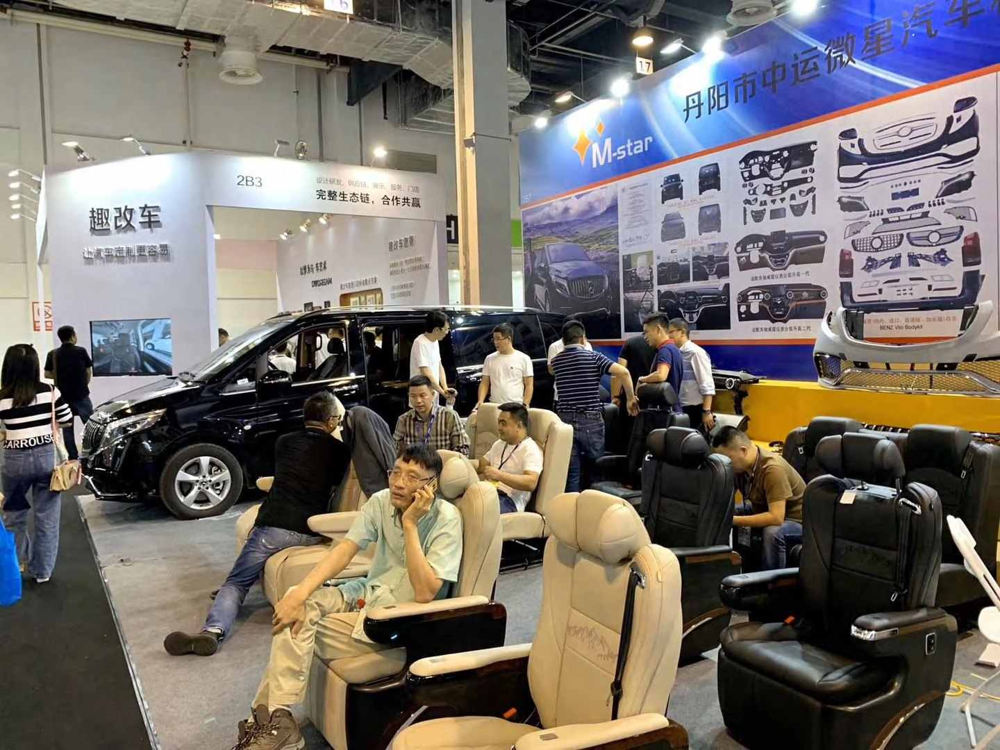
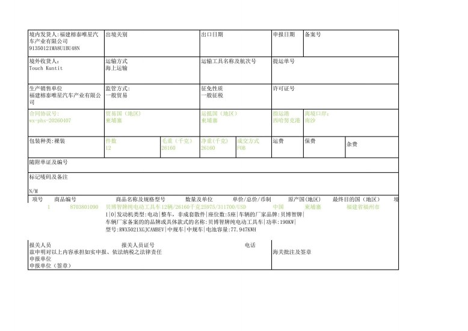
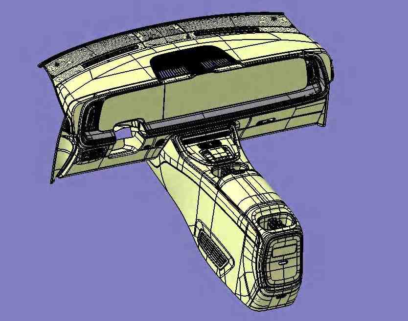

Requirement confirmation
Confirm model, trim, quantity, exterior color, destination country, target arrival time, certification needs, and preferred trade terms.

Export services
Procurement and export
Each step creates a visible confirmation point for the buyer, so the order can move from target model to shipment without vague promises.
Confirm model, trim, quantity, exterior color, destination country, target arrival time, certification needs, and preferred trade terms.
Compare available vehicles, batch information, parameter references, photo material, and destination-market suitability before quotation.
Provide formal company quotation, bilingual contract support, payment arrangement, and agreed delivery responsibilities.
Prepare commercial invoice, packing list, customs declaration material, and market-specific documents required for export handling.
Coordinate handover at Jiangyin, Xiamen, Pingtan, or agreed port routes, then support loading updates and after-sales communication.
Start the order
Evidence before shipment

Inspection
Exterior, interior, color, trim, and available stock details are checked before the buyer confirms the order.

Documents
Commercial documents, customs materials, and shipment references are prepared according to the agreed transaction.

Ports
Nearby port access helps coordinate domestic transfer, loading schedules, and overseas delivery planning.
Open logistics tracking
Selected customization
For suitable models and markets, V-Star Auto can support appearance packages, interior updates, and configuration adjustments aligned with export requirements.
Service support
Support scope is agreed by model and market so buyers know what can be handled locally and what should be coordinated through V-Star Auto.
Complete export after-sales workflow from customer contact to case closure.
View processSearch common damaged-part stock and reference export prices for current website models.
Search partsDraft export warranty coordination agreement for buyer and seller review.
Open agreementContact V-Star by WhatsApp or phone for technical triage and repair guidance.
Contact technical support